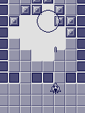
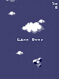
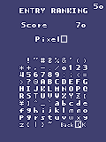
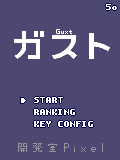
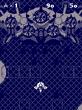

Afterword: The making of Guxt, with dates and screenshots
Note: Contains spoilers.
| 2005/10/14 | I thought maybe if I shrank the screen size I wouldn't have to draw as much and the game would get done faster. |
| 2005/10/16 | Now the ship can shoot. This is probably the most fun stage of game development... |
| 2005/11/08 | Made a map editor and added map display. It works just as I told it to, yet I can't suppress an admiring "Oooh!" |
2005/11/16 | Tried making an enemy character, though it doesn't do anything yet. This one is stuck to the map, in contrast to the player, who is part of the screen. |
| 2005/11/17  | Made it so you can blow up the enemy character with a beam. Simple destruction animation. |
| 2005/11/18 | Allowed display of onscreen messages. A single line in the middle of the screen... Not all that useful. This is when I drew the font. |
| 2005/11/20 | Got points to show in the upper-left. Upper-right is the refresh rate. |
| 2005/11/23 | Made clouds appear at random in the background and added a boost effect to the ship. I wanted to add a sense of speed. The colors look like a Game Boy. |
| 2005/11/24 | Added a spinning enemy. This is the one you see right at the beginning of the final version. |
| 2005/11/25 | Changed and balanced the background colors. I originally planned to do the whole thing in two colors, but there's no going back now... |
| 2005/11/26  | Game Over display. In other words, added damage detection. |
| 2005/11/27 | Made a speed-up item. Also added the twin beam. |
| 2005/11/28 | Made an enemy that attacks from behind. Guxt features a lot of enemies that come from behind. This one was actually left over from an abandoned game I once worked on with BA2. |
| 2005/11/28 | An enemy that circles around the player. The drawing rate makes fast enemies look too blurry... |
| 2005/11/29 | Tried making an enemy that shoots back. These appear from the bottom. |
| 2005/12/01 | Started work on the Stage 1 boss. It's made out of seven characters: wings, eye, and gun turrets. I don't have the energy to make multijointed characters... |
2005/12/02 | Made it so the Stage 1 boss appears from behind. |
| 2005/12/02 | Gave the boss a three-way laser. |
| 2005/12/02 | Made it so that item pickup points change depending on the timing. |
| 2005/12/04 | Made a death scene for the Stage 1 boss. |
| 2005/12/07  | Made the entry ranking. |
| 2005/12/07 | Made the ranking screen. It wasn't until the game was nearly finished that I connected it to the title screen. |
| 2005/12/08 | And with a typical boost scene, Stage 1 is finished. |
| 2005/12/12 | An abandoned character. Originally it was supposed to appear throughout the game. |
| 2005/12/14 | Started work on Stage 2. It took two months already to get this far... |
| 2005/12/15 | Stage 2 is all about the asteroids. You can dodge or shoot them down. They're tough, so dodging is best... Three-way beam. |
| 2005/12/15 | A different three-way beam. And yet another new enemy that comes from behind. |
| 2005/12/20 | One-hit death was getting too strict, so I added a shield item. |
| 2006/01/18 | The tiny screen makes even large enemies easy to draw. Looks like I made the right decision... The fish missiles kept coming back from offscreen, which wasn't fair, so they were scrapped. |
| 2006/01/21 | Missiles that break into three at the edge of the screen. I got the balance worked out, but something about them just isn't that cool. |
| 2006/01/23 | Made the title screen. No title decided yet, though. |
| 2006/01/27 | The key configuration screen. This is the first time I've ever seriously made one of these... |
| 2006/02/02 | Built map hit detection for Stage 3. I always struggle with this part... |
2006/02/03 | If you hit the walls, it's instant death, so that's not that hard, but... |
2006/02/04 | The bullet/map detection is harder, because the bullets move faster and tend to slip through the walls... |
| 2006/02/11 | The difficulty's ending up high, but since I'm not very good at shooters, I figure if I can beat the game maybe the difficulty's just right... |
| 2006/02/13 | Enemy rush right at the beginning of Stage 3. I thought maybe I needed to up the tempo a bit. |
| 2006/02/20 | You can actually hit the wall without getting hurt. Maybe some players never noticed. A parallel three-shot beam that got scrapped. |
| 2006/02/22 | Added breakable walls. They only showed up here in the end. |
| 2006/03/01 | An enemy that comes from the front and swoops around to the back. |
| 2006/03/03 | Secret character! It's fun to add secret bonuses, but I wish they hadn't taken so much time. |
| 2006/03/03 | Redrew the clouds and added larger ones. If I make the ones in front move faster, you start to feel the speed... is the idea. |
| 2006/03/12 | What was this screenshot again... Just coordinates display? |
| 2006/03/21 | Started the Stage 3 boss. Just "Think it, add it," over and over again. |
| 2006/04/01 | I think I kind of mechanically gave it three levels of attack. |
| 2006/05/07 | I figured three shields would make it too easy not to die, so I weakened it to the form of a power-up. It looks fancy, so I don't expect that many complaints... |
| 2006/05/24 | I've only got two screenshots of Stage 4... I guess I wanted to finish the whole thing up as soon as possible. |
| 2006/12/11 | Stage 5's fast-scrolling scene. Actually, it's not the background that's moving fast, just the rocks... |
| 2007/01/06 | The Stage 5 opening. |
2007/01/09 | I always liked the feeling of blowing up ground targets in Hudson's shooters. |
| 2007/01/14 | I've sure got a lot of screens of Stage 5... With completion near, the tension was high, I guess. |
| 2007/01/23 | Just before the final boss. I think now it was a mistake to change to the boss music and not bring the boss out right away. |
2007/01/27 | An uncluttered-looking boss appears. |
| 2007/01/30 | The lids close on the weak spots. |
| 2007/02/05 | The large bullets send the player dodging left and right. |
| 2007/02/18  | I settled on "Guxt" for the title. |
| 2007/02/22  | Made the Boss 5 death scene. |
2007/02/24 | Added selection of Trial and Ranking modes. The border on the font was getting to be a pain, so I ditched it. |
| 2007/03/06 | Made the enemy shots easier to spot. My plan was to stick with greyscale, but... |
| 2007/04/11 | The final boss of the Trial stage. |
| 2007/04/18 | The more I redrew it, the more it looked like Fuyuhiko. |
| 2007/04/19 | I gather players didn't find it too hard... Still, you can at least enjoy the tension of meeting it for the first time... |
| 2007/04/21 | Almost done. |
Postscript
Thanks to all test players and everyone who sent me their impressions.
With your help I was able to finish and release the game.
If I release anything else in the future, I hope you will enjoy it.
(2007/08/07 Pixel)